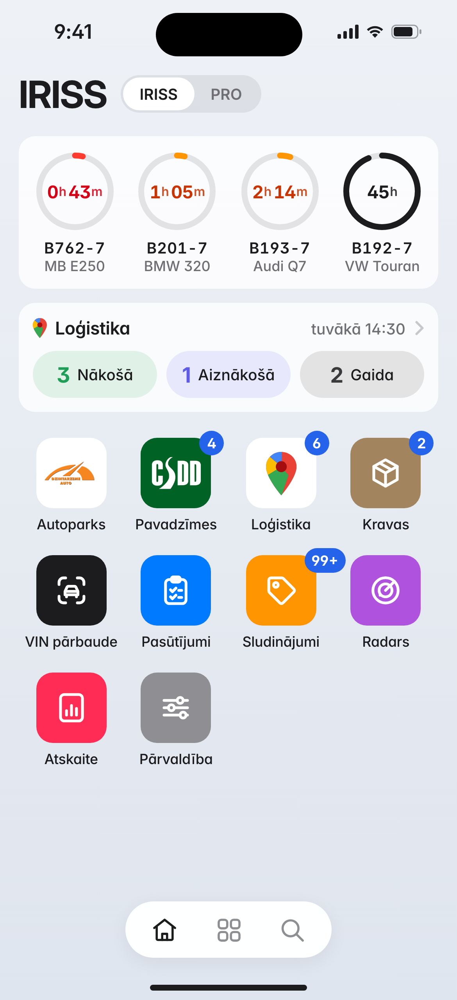
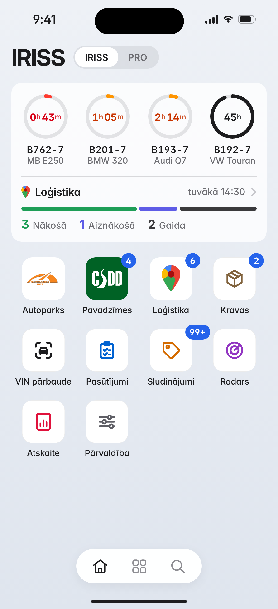
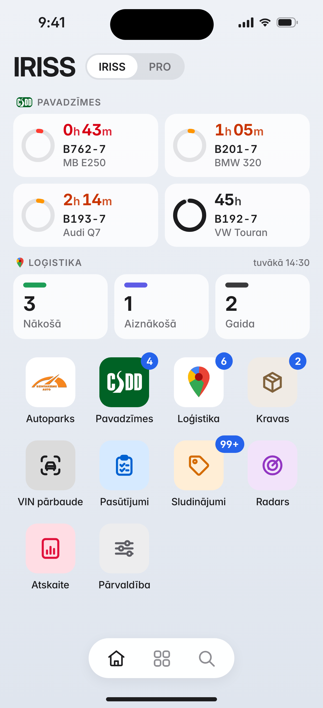
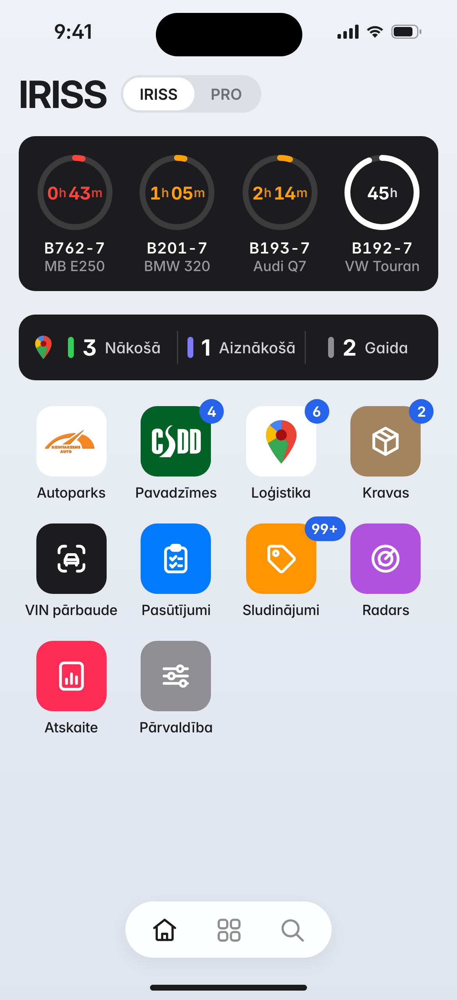
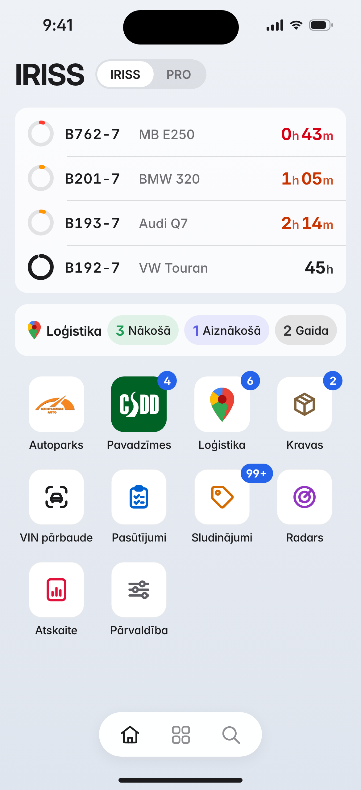
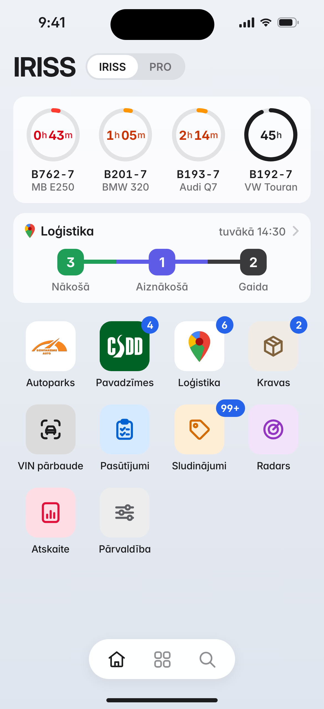
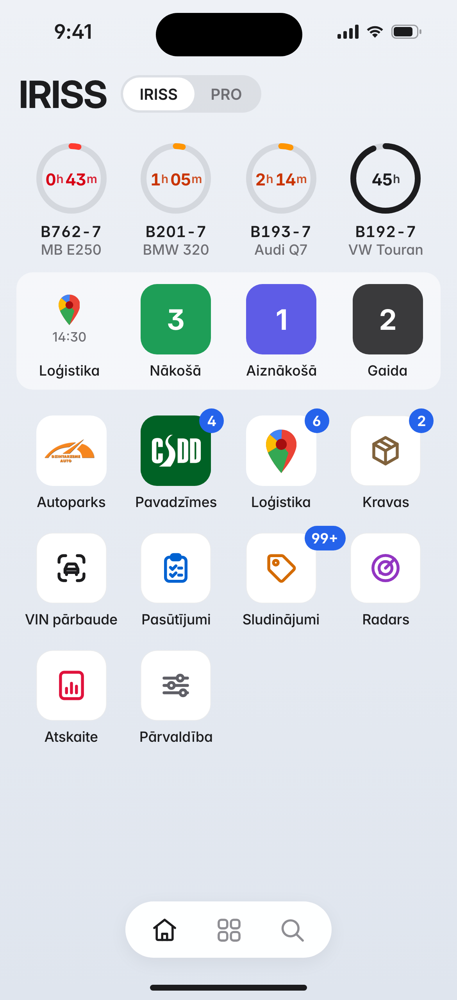
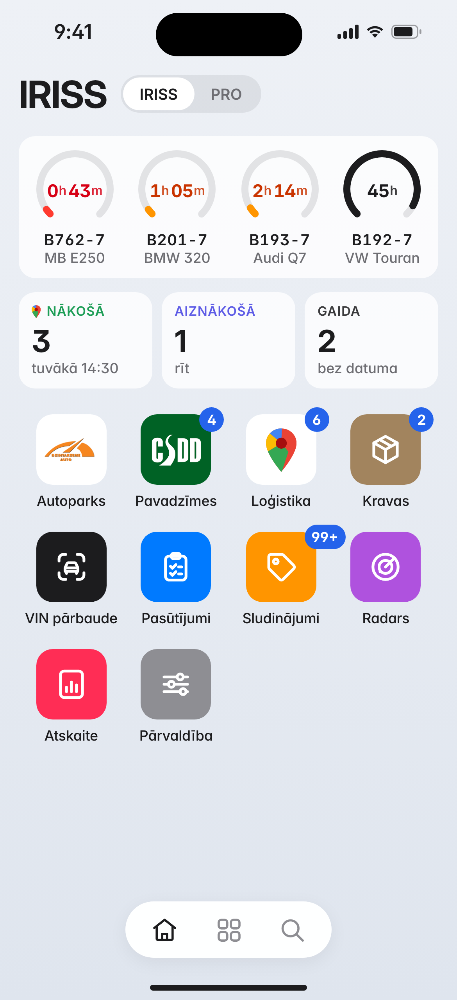
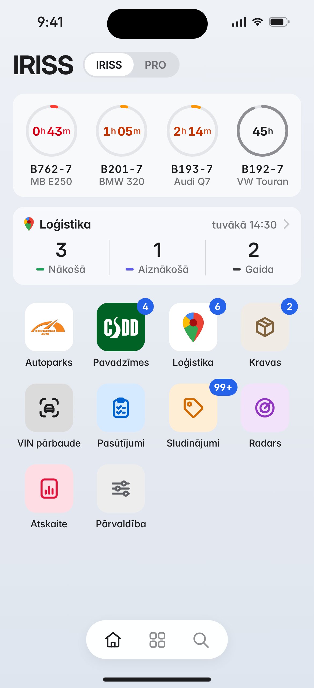
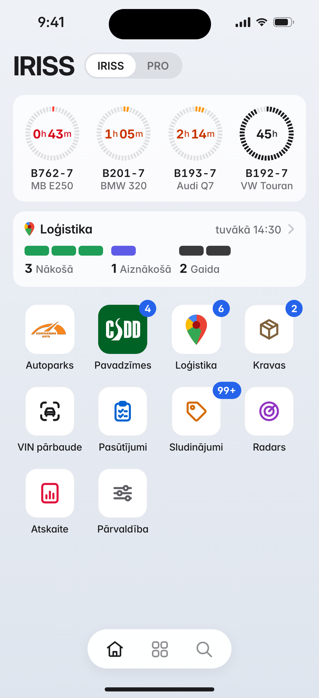

Augšā Pavadzīmes (visi 4 auto: numurs, marka, atlikušais laiks; steidzamība: sarkans < 1 h, oranžs < 6 h), apakšā Loģistika (Nākošā / Aiznākošā / Gaida). Abi vidžeti vienā kartīšu sistēmā, atšķiras forma: aplis = pavadzīme, kapsula / kvadrāts / josla = loģistika. Josla C nemainīta. Ikonas pārzīmētas, izņemot CSDD, Maps un Dzintarzeme. Makets - kods tikai pēc Nila "jā".

01 - Gredzeni un kapsulasIkonas: A (plakanas krāsainas)Divas vienādas baltas kartītes ar vienu rādiusu un atstarpēm. Pavadzīmes - 4 gredzeni, laiks iekšā, numurs un marka zem tā. Loģistika - 3 tonētas kapsulas tajā pašā līnijas biezumā. Forma atšķiras: aplis vai kapsula.

02 - Viens panelisIkonas: B (baltas)Abi vidžeti vienā kartītē, sadalīti ar matu līniju - augšā gredzeni, apakšā loģistika (2 atsevišķi pieskārieni). Loģistika ir viena proporcionāla josla: garums = kravu skaits. Tā pati 5 px līnija kā gredzeniem.

03 - BentoIkonas: C (tonētas)iOS logrīku režģis: katrs auto ir sava maza kartīte (gredzens + liels laiks + numurs + marka), loģistika - 3 tādas pašas kartītes ar biezu krāsainu kapsulu. Viena ģimene - viena kartīte; atšķiras pēc formas (aplis / kapsula) un klusa virsraksta.

04 - GrafītsIkonas: A (plakanas krāsainas)Abi vidžeti tumšā grafīta kartītēs (ne zaļā) - spilgti gredzeni uz tumša, ļoti uzskatāmi arī saulē. Loģistika - šaura tumša josla ar 3 segmentiem. Kopā tos tur tumšā virsma, atšķir forma un augstums.

05 - Rindas ar mini gredzeniemIkonas: B (baltas)Funkcionālākais: katrs auto sava rinda (mini gredzens, numurs, marka, laiks labajā malā lielā cipariem). Lasās kā Apple Atgādinājumi. Loģistika - viena tāda pati rinda ar 3 tonētām birkām. Kopā: viens saraksta ritms.

06 - Gredzeni un sliedeIkonas: C (tonētas)Pavadzīmes - gredzeni. Loģistika - maršruta sliede kā metro līnija: bieza līnija 3 krāsās, katrā posmā noapaļots kvadrāts ar skaitli. Sasaucas ar Maps ikonu un ar gredzenu līnijas biezumu, bet nekad nav aplis.

07 - Viens režģisIkonas: B (baltas)Viss uz tā paša 4 kolonnu režģa kā flīzes: gredzeni stāv tieši virs ikonām, loģistikas skaitļi ir tāda paša izmēra krāsaini kvadrāti. Ekrāns lasās kā viena kopīga sistēma: aplis = pavadzīme, kvadrāts = loģistika, flīze = sadaļa.

08 - Pulksteņa komplikācijasIkonas: A (plakanas krāsainas)Apple Watch valoda: pavadzīmes - apaļās komplikācijas (270° mērierīce, laiks iekšā), loģistika - taisnstūra komplikācijas ar etiķeti, lielu skaitli un īsu ziņu. Pulkstenī tās vienmēr ir viena ģimene - šeit tāpat.

09 - KlusaisIkonas: C (tonētas)Gandrīz vienkrāsains: gredzeni grafītā, krāsa parādās tikai tad, kad laiks beidzas (sarkans < 1 h, oranžs < 6 h). Loģistika - 3 kolonnas ar matu līnijām, krāsa tikai šaurā zīmē. Visvairāk Apple, vismazāk krāsu - steidzamais uzreiz izceļas.

10 - IedaļasIkonas: B (baltas)Viss sastāv no iedaļām: gredzenā 48 iedaļas = 48 h, deg tik, cik stundu atlicis (kā akumulatora indikators). Loģistikā 1 iedaļa = 1 krava, sagrupētas pēc statusa. Viena valoda - skaiti iedaļas; forma atšķiras (aplis / taisne).